R语言统计分析实战（RStudio）
背景
一位好友找我，问我有没有弄过RStudio，以前了解过R语言，用于统计分析的，但是实际没有实战过。所以嘛，就准备了一下，记录一下探索过程。 :)
前言
本片文章简单介绍一些RStudio相关以及少量统计学相关的知识，供上手学习使用。毕竟是一门编程语言，语法看了一下，不是很复杂，具备一定C语言即可，一些代码片段就可能看懂了。
如有相关错误，欢迎评论区留言指正，谢谢。
本文相关运行环境为：
- OS：Microsoft Windows [版本 10.0.18363.535]
- 内存：32GB
- R版本：3.6.2
- RStudio版本：1.2.5033.0
【注】 下文相关截图等数据均基于上述软件版本，如后期版本更新等，类推即可。
统计学相关理论（简要）
相关概念介绍
什么是R语言
R是R统计计算基金支持的用于统计计算，图形编程的免费软件环境。R语言在统计学家和数据挖掘者中广泛用于数据分析软件和数据挖掘。数据挖掘和学术文献数据库研究表明其普及程度大幅度提高。截至到2019年11月，在TIOBE排行[一个知名的编程语言排行榜，用于衡量编程语言的热度]中，R语言排名第16位。[1]
什么是RStudio
RStudio是R语言的一款免费的IDE编写工具。为计算环境提供最灌灌的使用的开源和企业就绪型专业软件。提供了脚本调试、可视化等功能，支持纯R脚本、Rmarkdown（脚本文档混排）、Bookdown（脚本混排混排成书）、Shiny（交互式网络应用）等功能。[2]
R和RStudio之间的关系
R是一个基础的环境程序，是运行R语言脚本必须的基础运行时环境。类似的像其它的编程语言，类如：Java、C、Python等等，必须安装相关的运行时环境一样，否则你无法直接运行的。而RStudio只是一款可视化编辑工具而已。
环境准备
安装R
下载R安装包
- 打开R的官网：https://www.r-project.org/
- 在左侧菜单栏中找到下载(download)，点击 CRAN，打开镜像网站列表页面，如下图所示：

- 找到中国站点，列了很多国内大学及机构的站点，像清华、中科大、同济，随笔找一个点击连接，如下图所示：

- 选择指定平台的R语言平台，如果是windows的就选择 Download R for Windows就是，如下图所示：
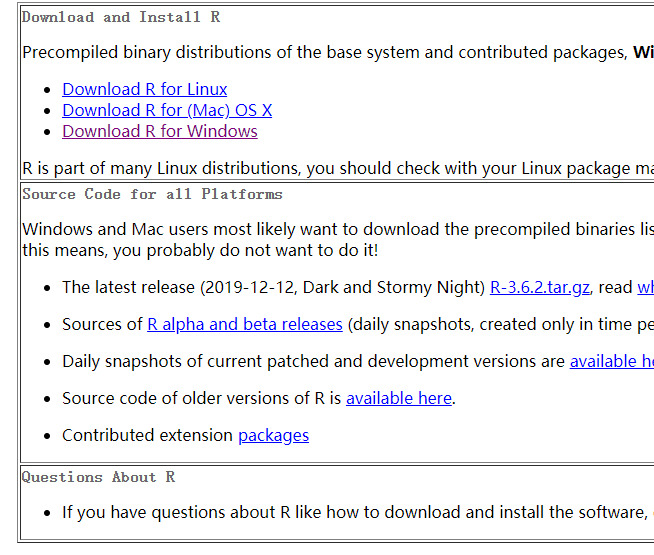 - 选择R的版本，直接单击base即可

- 直接单击Download R 3.6.2 for Windows开始下载


安装
基本一路 next下去即可，有三步提一下
- 安装路径，默认C盘，选择你指定的盘路径即可：
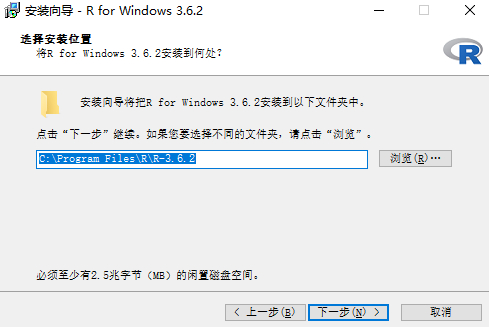 - 选择组件，默认全部勾选即可
- 启动选项，选择第二个：*No(接受默认选择)*即可
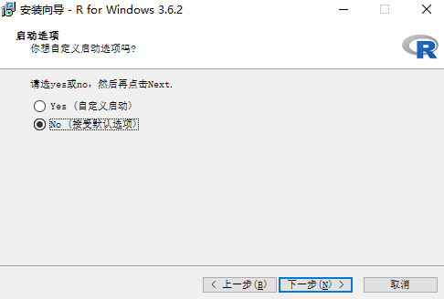
安装RStudio
下载RStudio安装包
- 打开RStudio官网：https://rstudio.com/products/rstudio/download/
- 点击页面中 Free下的 DOWNLOAD按钮，跳转到下载页面
- 选择你需要的版本，如windows版本
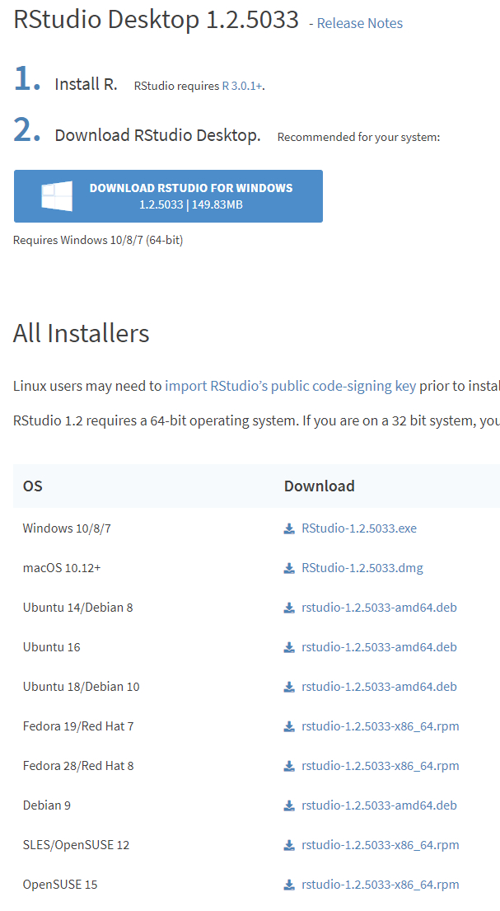
安装
过程很简单，除了第一步你需要选择安装路径之外，其余默认即可，过程3步就可以安装完成。
此过程就不贴安装过程了。
基本运行调试
运行RStudio（页面没有快捷方式的话，去开始菜单栏里找一下），如下图所示：
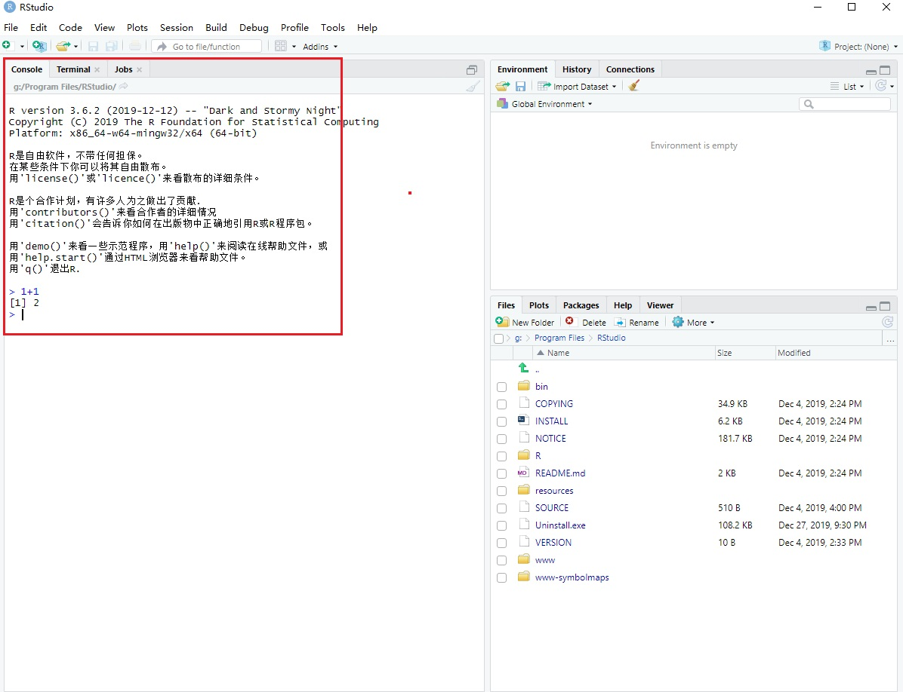
在左侧的 Console选项卡下，闪烁的光标后输入：1+1后，按键盘 *回车(Enter)*，如果下一行显示[1] 2，证明安装好了。
R语言语法操作相关
本语法小节参考R语言官方手册[3]中关于语法相关(基本上就是翻译了一下)，更多相关介绍直接请查阅手册其余内容。
基础语法
基础运算符(Simple manipulations)
对象模型和属性(Objects, their modes and attributes)
有序和无序操作符(Ordered and unordered factors)
数组和矩阵(Arrays and matrices)
列表和数据片段(Lists and data frames)
基础操作
从文件读取数据(Reading data from files)
可能的数据分布(Probability distributions)
数据分组、循环和条件运算(Grouping, loops and conditional execution)
编写自己的运算函数(Writing your own functions)
R中的统计模型(Statistical models in R)
图形处理(Graphical procedures)
RStudio使用教程
基本界面介绍
基础篇
进阶篇
样例实战
样例1：一例黑客团队邮箱列表分析
原始参考案例：http://rpubs.com/F789GH/HackingTeamEmails
原文分析目的
- 统计列表中所有邮箱域名个数
- 统计邮箱域名所属区域，分析这些黑客邮件地址都来自什么地方
获取数据源
直接从这个链接：黑客邮箱列表，中获取黑客邮箱名单。
Copy邮箱列表到txt文件中，保存准备处理。需要简单处理一下里面的邮箱地址，列表中有#号和空白行等等。
处理后的列表文件，https://github.com/nimbusking/start_r_programming/blob/master/hack_team_email_list.txt开始分析
引用必要的类库
分析过程中使用了一些函数，因此需要引用相关类库第一次运行，控制台中键入上述代码后，会自动联网下载相应类库并安装1
2
3
4
5
6
7library(rvest)
# ggplot2绘图函数包
library(ggplot2)
library(stringi)
library(magrittr)
library(plyr)
library(dplyr)分析汇总域名频率分布柱状图
分析完成后的展示，如下图所示：
分析域名对应国家出现频率
分析完成后的展示，如下图所示：
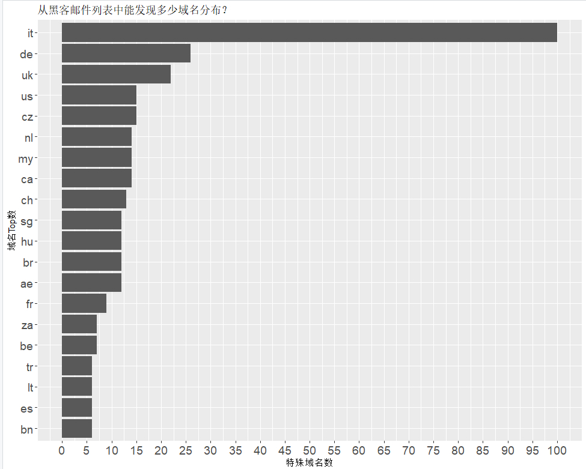结论
排名第一的居然是it（意大利），其次是德国、英国、美国、捷克…完整代码
1
2
3
4
5
6
7
8
9
10
11
12
13
14
15
16
17
18
19
20
21
22
23
24
25
26
27
28
29
30
31
32
33
34
35
36
37
38
39
40
41
42
43
44
45
46
47
48
49
50
51
52
53
54
55
56
57
58
59
60
61
62
63
64
65
66
67
68
69
70
71
72
73
74
75
76
77
78
79# 导入函数库
library(rvest)
library(ggplot2)
library(stringi)
library(magrittr)
library(plyr)
library(dplyr)
# 从txt数据源中读取数据到变量email_list中
email_list <- read.table("hack_team_email_list.txt", header = T)
# 打印前6行数据
head(email_list)
# 按符号@分割电子邮件地址到变量splitted_email中
splitted_email <- data.frame(stri_split_fixed(tolower(email_list$V1), "@", 2, omit_empty = NA, simplify = TRUE))
# 复制完整邮箱名到第三列
splitted_email$X3 <- paste(tolower(splitted_email$X1), tolower(splitted_email$X2), sep = "@")
head(splitted_email)
# 绘制域名频率柱状图
## 表格转换数据帧
splitted_email_freq <- as.data.frame(table(splitted_email$X2))
## 调用plyr函数包中的arrange方法进行排序
splitted_email_freq <- plyr::arrange(splitted_email_freq, desc(splitted_email_freq$Freq))
head(splitted_email_freq)
## 绘制柱状图
splitted_email_freq_plot <- ggplot(data=splitted_email_freq[1:20,], aes(x=reorder(Var1, Freq), y=Freq))
## 设置图形展示样式
splitted_email_freq_plot <- splitted_email_freq_plot + geom_bar(stat = "identity") + coord_flip(ylim= c(0,430)) + theme(
axis.text.y = element_text(size = 12),
axis.text.x = element_text(size = 12))
## 设置图形标题横纵坐标
splitted_email_freq_plot <- splitted_email_freq_plot + xlab("域名") + ylab("各域名提供商所拥有的黑客数量") + ggtitle("从黑客邮件列表中能发现多少域名提供商？")
## 图形坐标范围
splitted_email_freq_plot <- splitted_email_freq_plot + scale_y_continuous(breaks = seq(0, 430, 30))
## 生成图形
splitted_email_freq_plot
# 绘制国家出现频率
## 先过滤一些公共域名
blackListDomains <- c("outlook|gmail|yahoo|live|hotmail|googlemail")
## 过滤列表域名列表
splitted_email_freq_bld <- splitted_email[!stri_detect_regex(splitted_email$X2, blackListDomains), ]
## 转换X2为数据帧
splitted_email_freq_bld <- as.data.frame(table(splitted_email_freq_bld$X2))
## 排序
splitted_email_freq_bld <- plyr::arrange(splitted_email_freq_bld, desc(splitted_email_freq_bld$Freq))
## 打印前15行
head(splitted_email_freq_bld, 15)
# 处理国家归属
domain_list <- data.frame(stri_split_fixed(tolower(splitted_email_freq_bld$Var1), ".", -1, omit_empty = NA, simplify = TRUE))
domain_list[domain_list == ""] <- NA
domain_list$X1 <- as.character(domain_list$X1)
domain_list$X2 <- as.character(domain_list$X2)
domain_list$X3 <- as.character(domain_list$X3)
domain_list$X4 <- as.character(domain_list$X4)
domain_list$X5 <- as.character(domain_list$X5)
domain_list$new_NEW <- domain_list[-1][cbind(1:nrow(domain_list), max.col(!is.na(domain_list[-1]), ties.method = "last"))]
## 合并行
domain_list$new_NEW <- domain_list[-1][cbind(1:nrow(domain_list), max.col(!is.na(domain_list[-1]), ties.method = "last"))]
## freq again
domain_list <- as.data.frame(table(domain_list$new_NEW))
domain_list <- plyr::arrange(domain_list, desc(domain_list$Freq))
domain_list <- domain_list[!stri_detect_regex(domain_list$Var1, "com|org|net|edu|gov|mil"), ]
## 打印前10行
head(domain_list, 10)
## 绘制域名
domain_list_plot <- ggplot(data=domain_list[1:20,], aes(x=reorder(Var1, Freq), y=Freq))
domain_list_plot <- domain_list_plot + geom_bar(stat = "identity") + coord_flip(ylim= c(0,100)) + theme(
axis.text.y = element_text(size = 14),
axis.text.x = element_text(size = 14))
domain_list_plot <- domain_list_plot + xlab("域名Top数") + ylab("特殊域名数") + ggtitle("从黑客邮件列表中能发现多少域名分布？")
domain_list_plot <- domain_list_plot + scale_y_continuous(breaks = seq(0, 100, 5))
## 生成图形
domain_list_plot
# 从图形中看，cz（捷克Czech Republic）归属的比较特别，统计看一下
splitted_email_czech <- splitted_email[grepl(".cz", splitted_email$X2), ]
head(splitted_email_czech, 10)

样例2：贝叶斯统计理论探讨
原文参考：https://www.statsjoke.me/posts/philosophy-of-bayesian-statistics/
概念相关
贝叶斯定理

伯努利分布
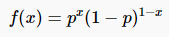
二项式定理
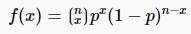
β分布
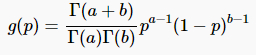
探究课题
通过模拟硬币反转来绘制这项后验概率的更新图
代码片段如下
1 | # 设置随机种子 |
观察每次样本数后的的分布图
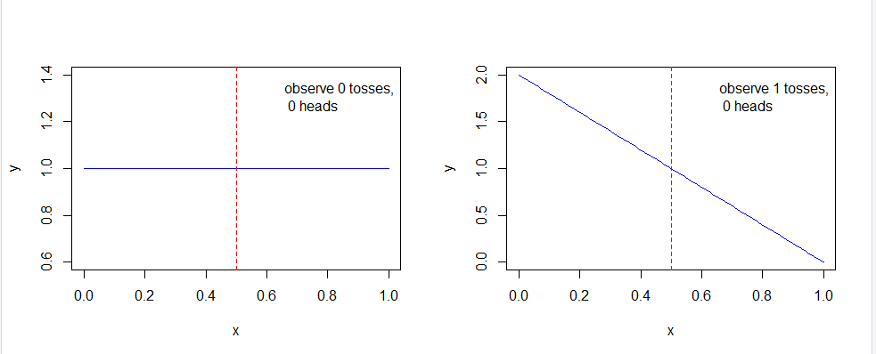
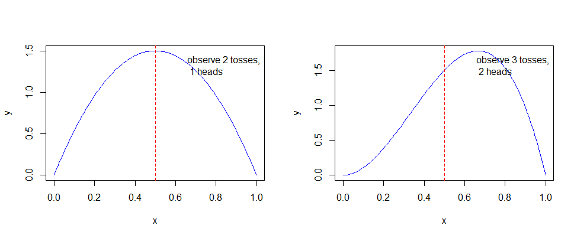

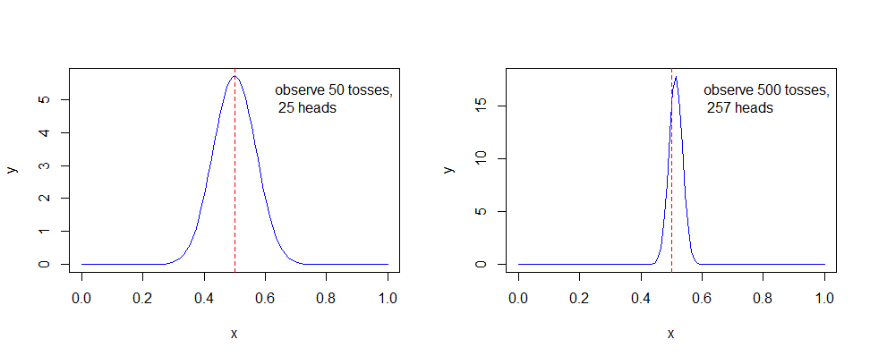
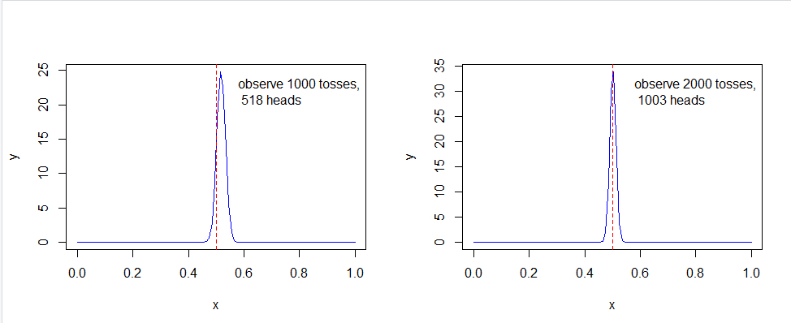
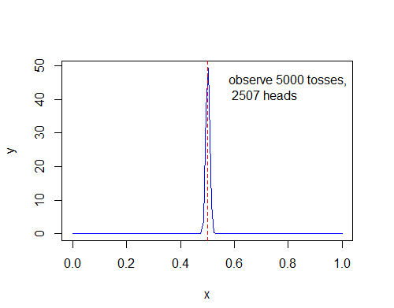
可以看出，随着样本数的不断增加，可以得出概率越来越趋近p = 0.5，尽管不是全部。
一个简单的贝叶斯推断：
- 先验概率：P(A) = p
- 后验概率：P(A|X)
- P(X|A)
- P(X)
推理如下图所示：
近似为：P(X| ~ A) = 0.5，因此：
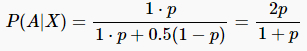
演示代码为：
1 | p <- seq(0, 1, length.out = 50) |
RStudio中演示为
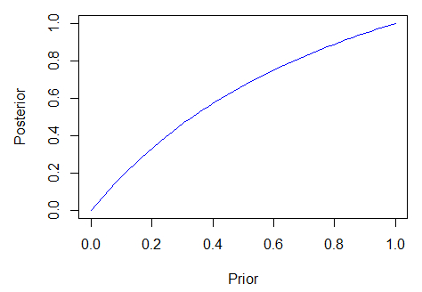
泊松分布
概率质量函数
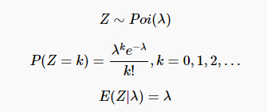
示例代码：
1 | a <- 0:15 |

指数分布
概率密度函数
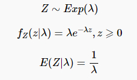
示例代码：
1 | a <- seq(0, 4, length.out = 100) |

引用
[1] R (programming language):[EB/OL]. 2004.10[2019-12]. https://en.wikipedia.org/wiki/R_(programming_language)
[2] About RStudio:[EB/OL]. [2019-12]. https://rstudio.com/about/
[3] An Introduction to R:Notes On R: A Programming Environment for Data Analysis And Graphics.[EB/OL].2019.12.12[2019-12]. https://mirrors.tuna.tsinghua.edu.cn/CRAN/doc/manuals/r-release/R-intro.pdf